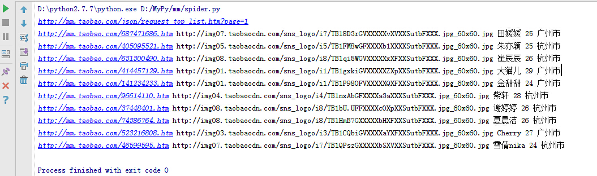
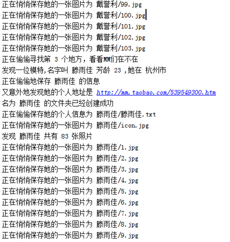
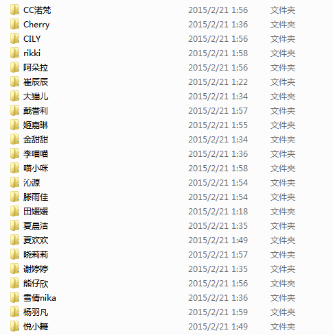

Python爬虫实战四之抓取淘宝MM照片
福利啊福利，本次为大家带来的项目是抓取淘宝MM照片并保存起来，大家有没有很激动呢？
最新动态
更新时间：2015/8/2 最近好多读者反映代码已经不能用了，原因是淘宝索引页的MM链接改了。网站改版了，URL的索引已经和之前的不一样了，之前可以直接跳转到每个MM的个性域名，现在中间加了一个跳转页，本以为可以通过这个页面然后跳转到原来的个性域名，而经过一番折腾发现，这个跳转页中的内容是JS动态生成的，所以不能用Urllib库来直接抓取了，本篇就只提供学习思路，代码不能继续用了。 之后博主会利用其它方法来尝试解决，如果解决，第一时间更新！谢谢大家！
更新时间：2016/3/26 如上问题已解决，利用 PhantomJS的动态解析即可完成。因为 PySpider 同样支持 PhantomJS，所以我直接利用了 PySpider 来完成，解决方案如下 解决方案 另外如果不想使用框架，可以直接利用 Selenium + PhantomJS 来解析，同样方便，解决方案可以参考 动态解析解决方案
本篇目标
1.抓取淘宝MM的姓名，头像，年龄
2.抓取每一个MM的资料简介以及写真图片
3.把每一个MM的写真图片按照文件夹保存到本地
4.熟悉文件保存的过程
1.URL的格式
我们需要抓取本页面的头像地址，MM姓名，MM年龄，MM居住地，以及MM的个人详情页面地址。
2.抓取简要信息
相信大家经过上几次的实战，对抓取和提取页面的地址已经非常熟悉了，这里没有什么难度了，我们首先抓取本页面的MM详情页面地址，姓名，年龄等等的信息打印出来，直接贴代码如下
__author__ = 'CQC'
# -*- coding:utf-8 -*-
import urllib
import urllib2
import re
class Spider:
def __init__(self):
self.siteURL = 'http://mm.taobao.com/json/request_top_list.htm'
def getPage(self,pageIndex):
url = self.siteURL + "?page=" + str(pageIndex)
print url
request = urllib2.Request(url)
response = urllib2.urlopen(request)
return response.read().decode('gbk')
def getContents(self,pageIndex):
page = self.getPage(pageIndex)
pattern = re.compile('<div class="list-item".*?pic-word.*?<a href="(.*?)".*?<img src="(.*?)".*?<a class="lady-name.*?>(.*?)</a>.*?<strong>(.*?)</strong>.*?<span>(.*?)</span>',re.S)
items = re.findall(pattern,page)
for item in items:
print item[0],item[1],item[2],item[3],item[4]
spider = Spider()
spider.getContents(1)
运行结果如下

2.文件写入简介
在这里，我们有写入图片和写入文本两种方式
1）写入图片
#传入图片地址，文件名，保存单张图片
def saveImg(self,imageURL,fileName):
u = urllib.urlopen(imageURL)
data = u.read()
f = open(fileName, 'wb')
f.write(data)
f.close()
2）写入文本
def saveBrief(self,content,name):
fileName = name + "/" + name + ".txt"
f = open(fileName,"w+")
print u"正在偷偷保存她的个人信息为",fileName
f.write(content.encode('utf-8'))
3）创建新目录
#创建新目录
def mkdir(self,path):
path = path.strip()
# 判断路径是否存在
# 存在 True
# 不存在 False
isExists=os.path.exists(path)
# 判断结果
if not isExists:
# 如果不存在则创建目录
# 创建目录操作函数
os.makedirs(path)
return True
else:
# 如果目录存在则不创建，并提示目录已存在
return False
3.代码完善
主要的知识点已经在前面都涉及到了，如果大家前面的章节都已经看了，完成这个爬虫不在话下，具体的详情在此不再赘述，直接帖代码啦。
spider.py
__author__ = 'CQC'
# -*- coding:utf-8 -*-
import urllib
import urllib2
import re
import tool
import os
#抓取MM
class Spider:
#页面初始化
def __init__(self):
self.siteURL = 'http://mm.taobao.com/json/request_top_list.htm'
self.tool = tool.Tool()
#获取索引页面的内容
def getPage(self,pageIndex):
url = self.siteURL + "?page=" + str(pageIndex)
request = urllib2.Request(url)
response = urllib2.urlopen(request)
return response.read().decode('gbk')
#获取索引界面所有MM的信息，list格式
def getContents(self,pageIndex):
page = self.getPage(pageIndex)
pattern = re.compile('<div class="list-item".*?pic-word.*?<a href="(.*?)".*?<img src="(.*?)".*?<a class="lady-name.*?>(.*?)</a>.*?<strong>(.*?)</strong>.*?<span>(.*?)</span>',re.S)
items = re.findall(pattern,page)
contents = []
for item in items:
contents.append([item[0],item[1],item[2],item[3],item[4]])
return contents
#获取MM个人详情页面
def getDetailPage(self,infoURL):
response = urllib2.urlopen(infoURL)
return response.read().decode('gbk')
#获取个人文字简介
def getBrief(self,page):
pattern = re.compile('<div class="mm-aixiu-content".*?>(.*?)<!--',re.S)
result = re.search(pattern,page)
return self.tool.replace(result.group(1))
#获取页面所有图片
def getAllImg(self,page):
pattern = re.compile('<div class="mm-aixiu-content".*?>(.*?)<!--',re.S)
#个人信息页面所有代码
content = re.search(pattern,page)
#从代码中提取图片
patternImg = re.compile('<img.*?src="(.*?)"',re.S)
images = re.findall(patternImg,content.group(1))
return images
#保存多张写真图片
def saveImgs(self,images,name):
number = 1
print u"发现",name,u"共有",len(images),u"张照片"
for imageURL in images:
splitPath = imageURL.split('.')
fTail = splitPath.pop()
if len(fTail) > 3:
fTail = "jpg"
fileName = name + "/" + str(number) + "." + fTail
self.saveImg(imageURL,fileName)
number += 1
# 保存头像
def saveIcon(self,iconURL,name):
splitPath = iconURL.split('.')
fTail = splitPath.pop()
fileName = name + "/icon." + fTail
self.saveImg(iconURL,fileName)
#保存个人简介
def saveBrief(self,content,name):
fileName = name + "/" + name + ".txt"
f = open(fileName,"w+")
print u"正在偷偷保存她的个人信息为",fileName
f.write(content.encode('utf-8'))
#传入图片地址，文件名，保存单张图片
def saveImg(self,imageURL,fileName):
u = urllib.urlopen(imageURL)
data = u.read()
f = open(fileName, 'wb')
f.write(data)
print u"正在悄悄保存她的一张图片为",fileName
f.close()
#创建新目录
def mkdir(self,path):
path = path.strip()
# 判断路径是否存在
# 存在 True
# 不存在 False
isExists=os.path.exists(path)
# 判断结果
if not isExists:
# 如果不存在则创建目录
print u"偷偷新建了名字叫做",path,u'的文件夹'
# 创建目录操作函数
os.makedirs(path)
return True
else:
# 如果目录存在则不创建，并提示目录已存在
print u"名为",path,'的文件夹已经创建成功'
return False
#将一页淘宝MM的信息保存起来
def savePageInfo(self,pageIndex):
#获取第一页淘宝MM列表
contents = self.getContents(pageIndex)
for item in contents:
#item[0]个人详情URL,item[1]头像URL,item[2]姓名,item[3]年龄,item[4]居住地
print u"发现一位模特,名字叫",item[2],u"芳龄",item[3],u",她在",item[4]
print u"正在偷偷地保存",item[2],"的信息"
print u"又意外地发现她的个人地址是",item[0]
#个人详情页面的URL
detailURL = item[0]
#得到个人详情页面代码
detailPage = self.getDetailPage(detailURL)
#获取个人简介
brief = self.getBrief(detailPage)
#获取所有图片列表
images = self.getAllImg(detailPage)
self.mkdir(item[2])
#保存个人简介
self.saveBrief(brief,item[2])
#保存头像
self.saveIcon(item[1],item[2])
#保存图片
self.saveImgs(images,item[2])
#传入起止页码，获取MM图片
def savePagesInfo(self,start,end):
for i in range(start,end+1):
print u"正在偷偷寻找第",i,u"个地方，看看MM们在不在"
self.savePageInfo(i)
#传入起止页码即可，在此传入了2,10,表示抓取第2到10页的MM
spider = Spider()
spider.savePagesInfo(2,10)
tool.py
__author__ = 'CQC'
#-*- coding:utf-8 -*-
import re
#处理页面标签类
class Tool:
#去除img标签,1-7位空格,
removeImg = re.compile('<img.*?>| {1,7}| ')
#删除超链接标签
removeAddr = re.compile('<a.*?>|</a>')
#把换行的标签换为\n
replaceLine = re.compile('<tr>|<div>|</div>|</p>')
#将表格制表<td>替换为\t
replaceTD= re.compile('<td>')
#将换行符或双换行符替换为\n
replaceBR = re.compile('<br><br>|<br>')
#将其余标签剔除
removeExtraTag = re.compile('<.*?>')
#将多行空行删除
removeNoneLine = re.compile('\n+')
def replace(self,x):
x = re.sub(self.removeImg,"",x)
x = re.sub(self.removeAddr,"",x)
x = re.sub(self.replaceLine,"\n",x)
x = re.sub(self.replaceTD,"\t",x)
x = re.sub(self.replaceBR,"\n",x)
x = re.sub(self.removeExtraTag,"",x)
x = re.sub(self.removeNoneLine,"\n",x)
#strip()将前后多余内容删除
return x.strip()
以上两个文件就是所有的代码内容，运行一下试试看，那叫一个酸爽啊

看看文件夹里面有什么变化


不知不觉，海量的MM图片已经进入了你的电脑，还不快快去试试看！！
代码均为本人所敲，写的不好，大神勿喷，写来方便自己，同时分享给大家参考！希望大家支持！